Winter 2020
3.5 × 6.5"
Jussi Parikka’s essay, “Malware as Operational Art: On the If/Then of Geopolitics and Tricksters,” encourages a reconsideration of glitches and instances of computer failure as the norm.
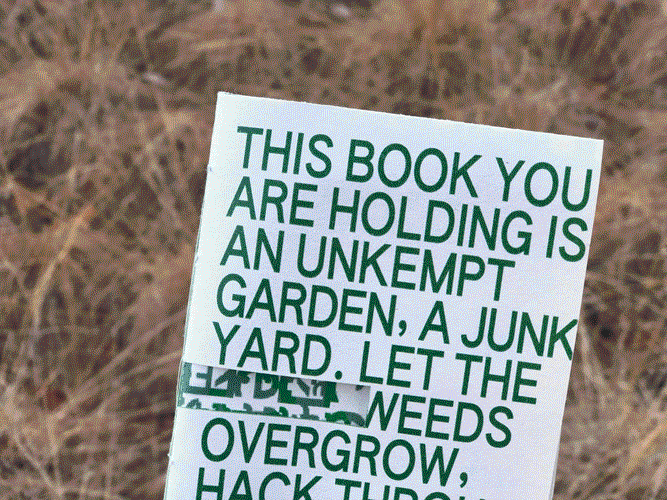Continuing my research into interface metaphors, the structure of this book references the skeletal syntax of the web and the layered, nested anatomy of HTML. Smaller moves — the unravelling typography and cut paper revealing a computer-generated texture on the inner folds — seek to reinforce this theme of perceived danger, offering an uneasy, anti-reader friendly experience.
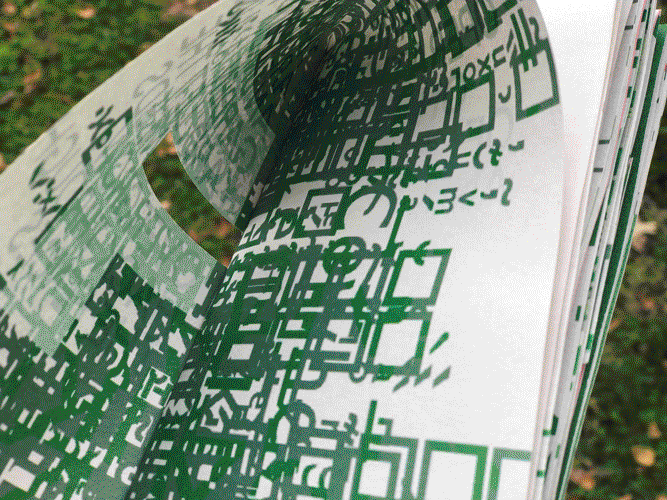The use of San Francisco references the visual language of Apple products, whereas Apple Chancery embodies the sprawl of weeds and hints at contagion. A condensed Authentic Sans invites the reader to reconsider what a book can be — as seen in the front cover, which seeks to act as a billboard.
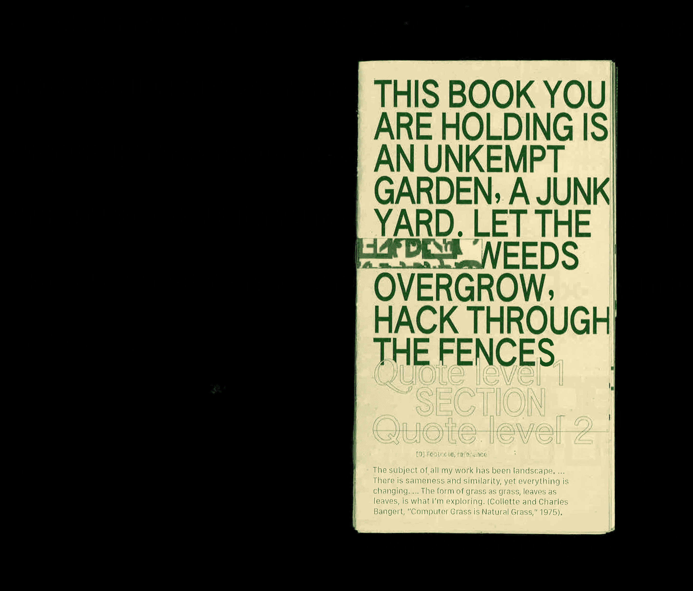 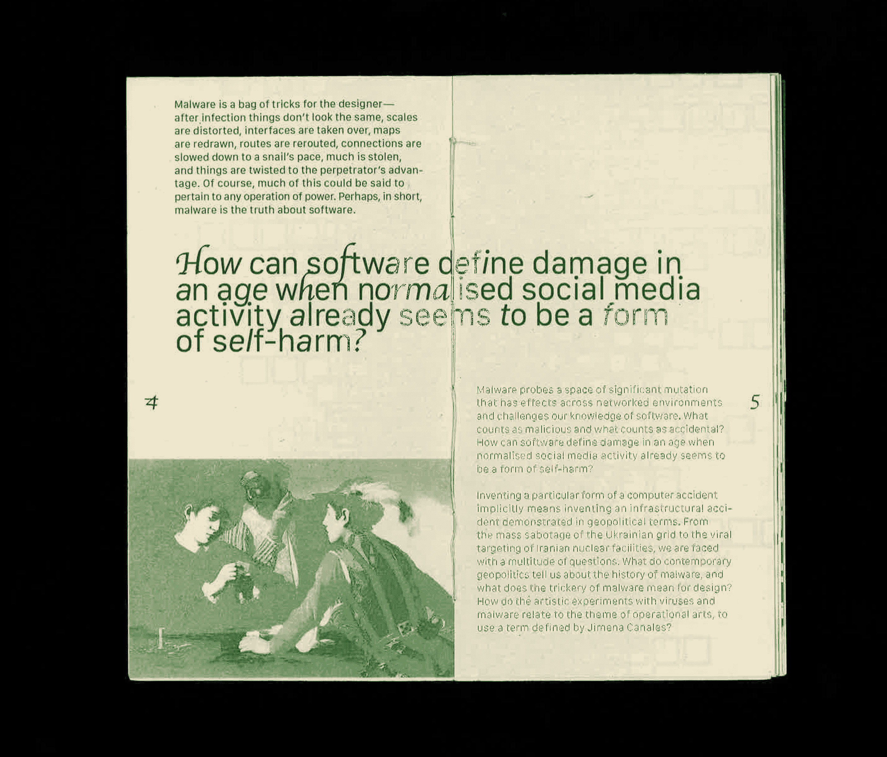 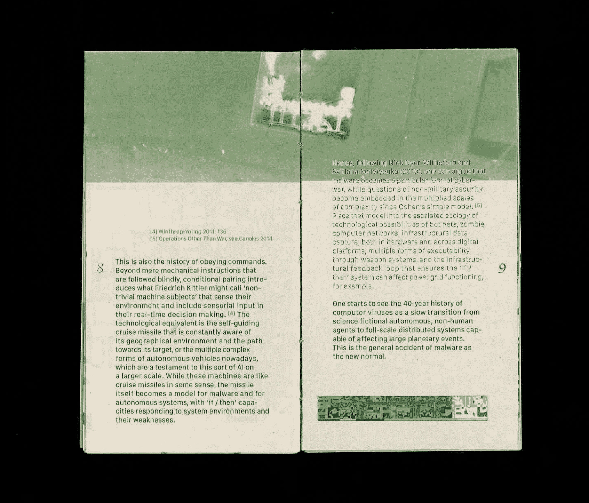 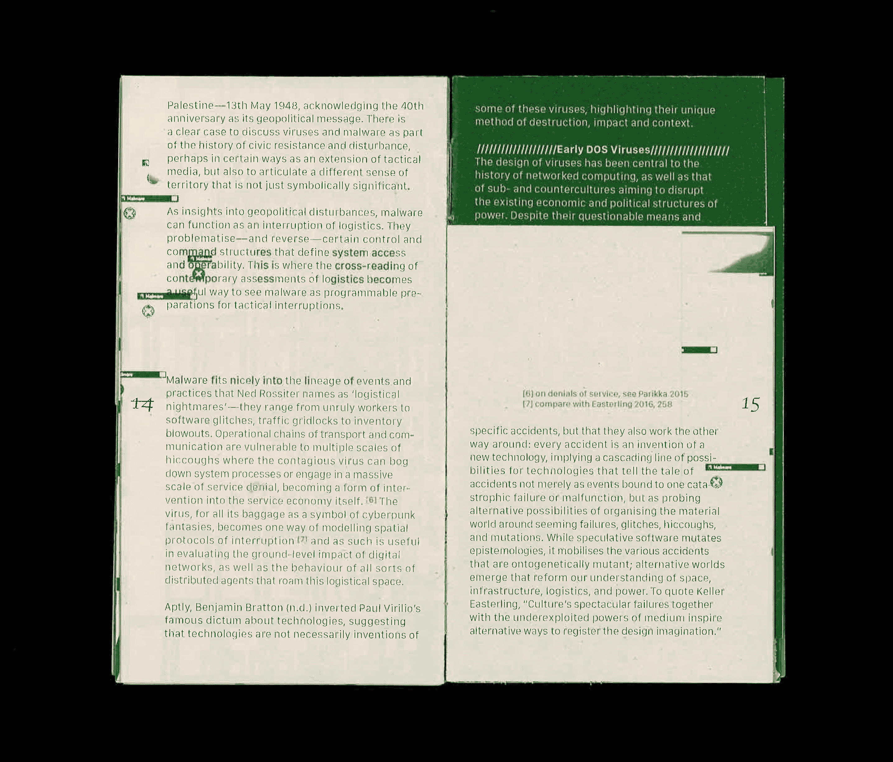 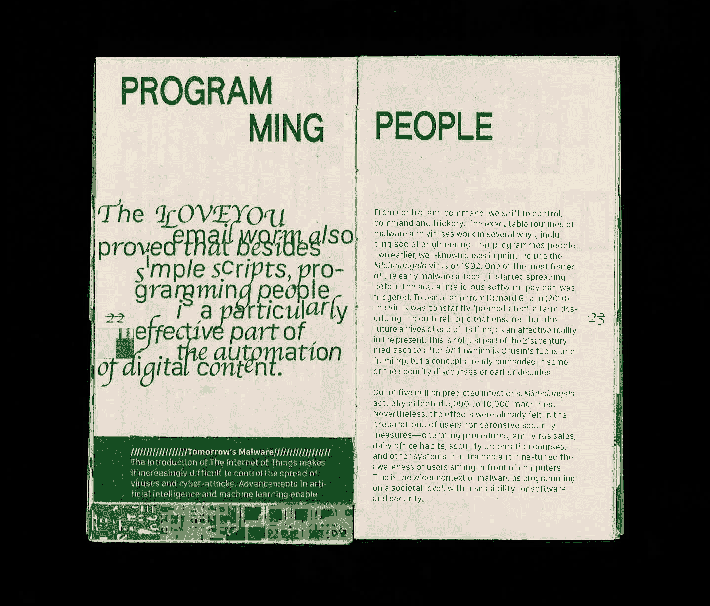
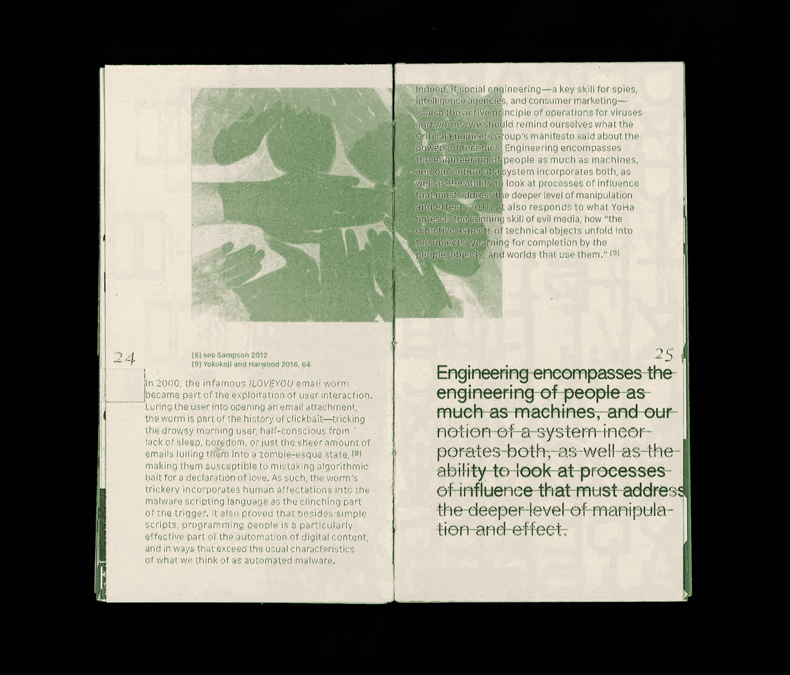
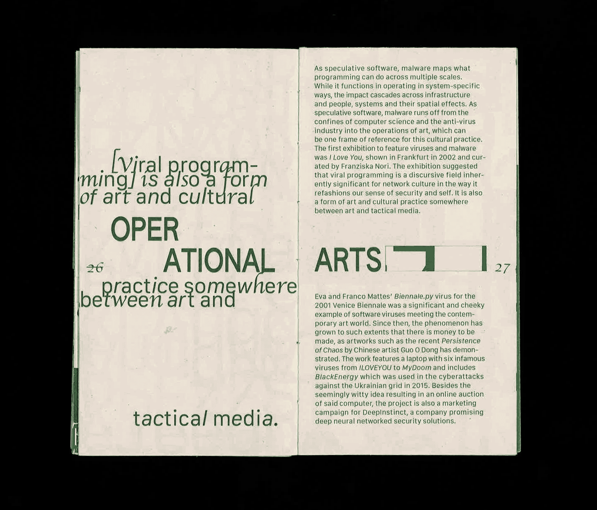
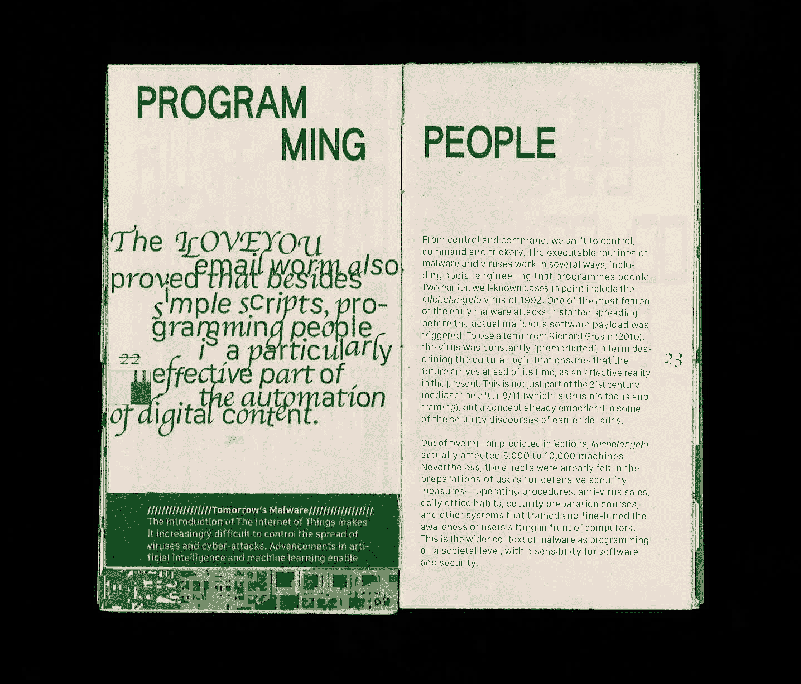
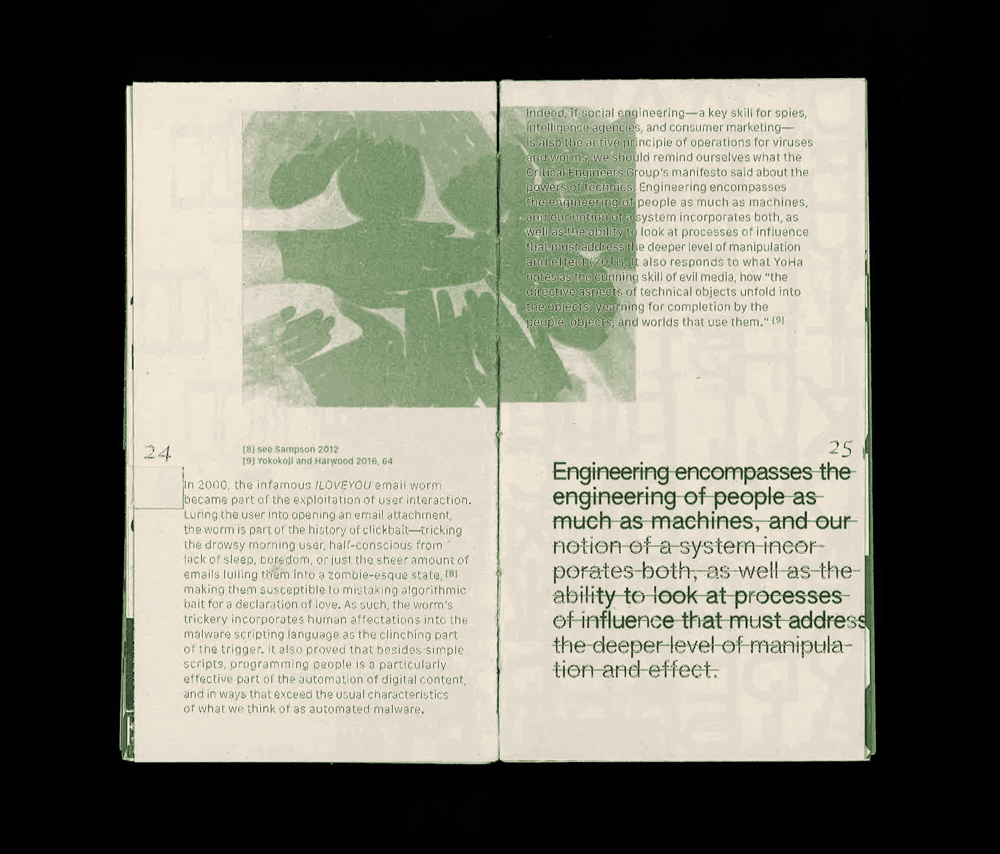
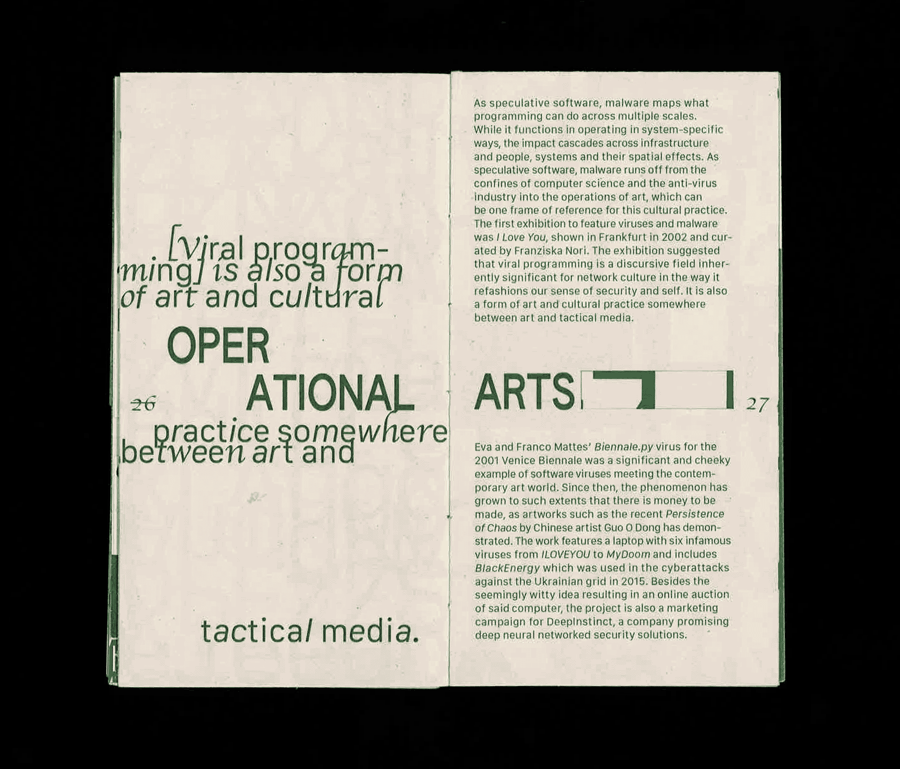